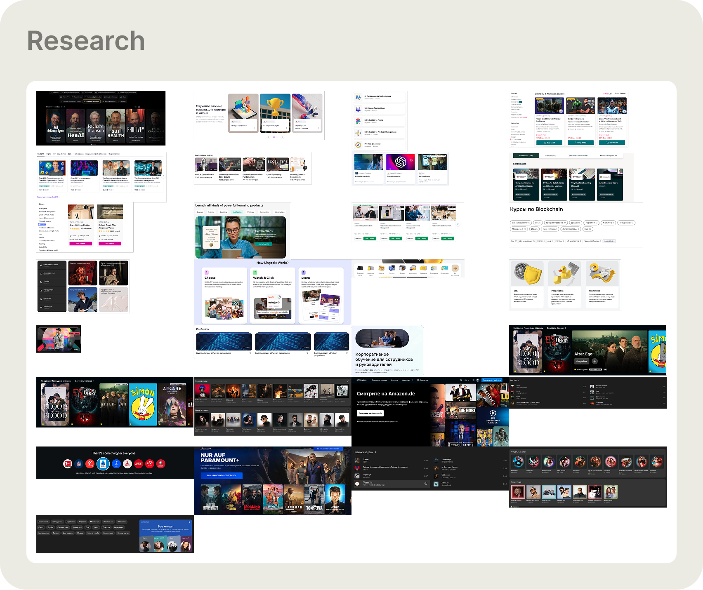
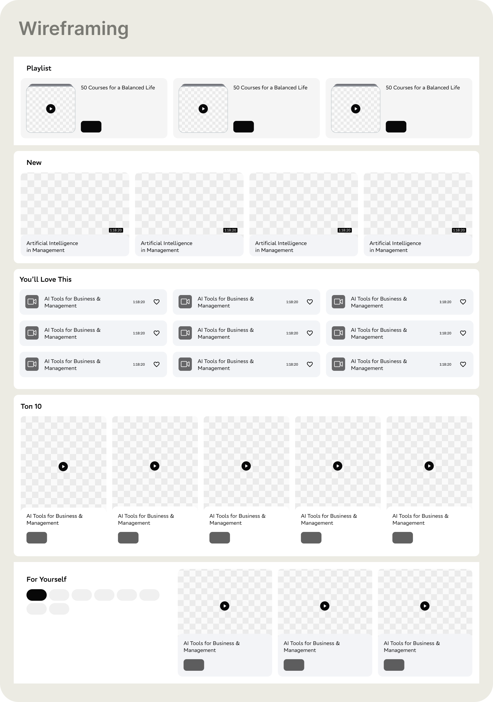
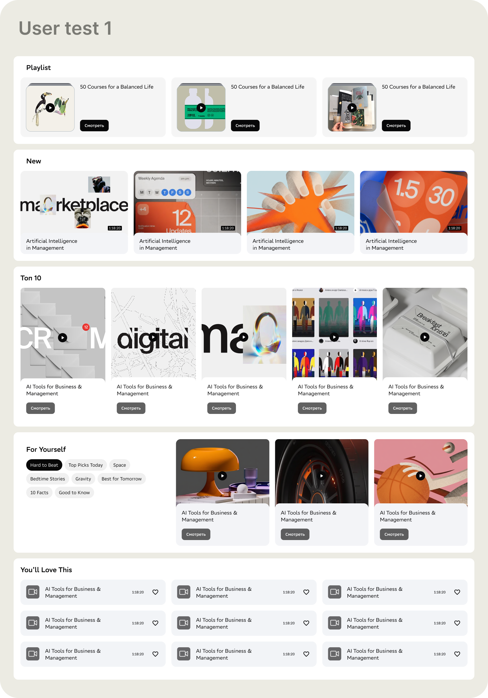
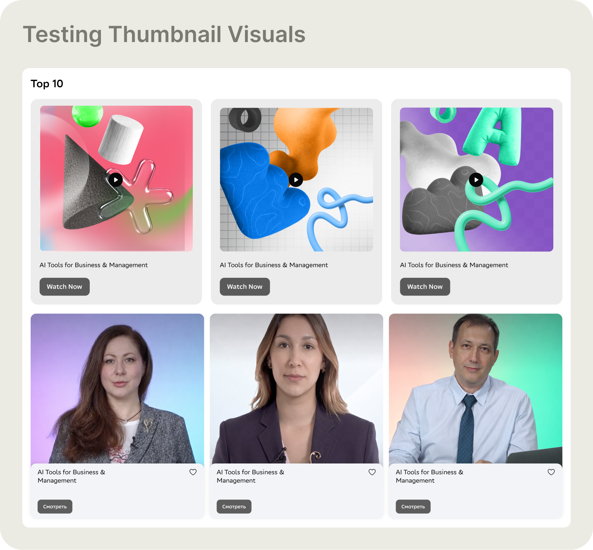
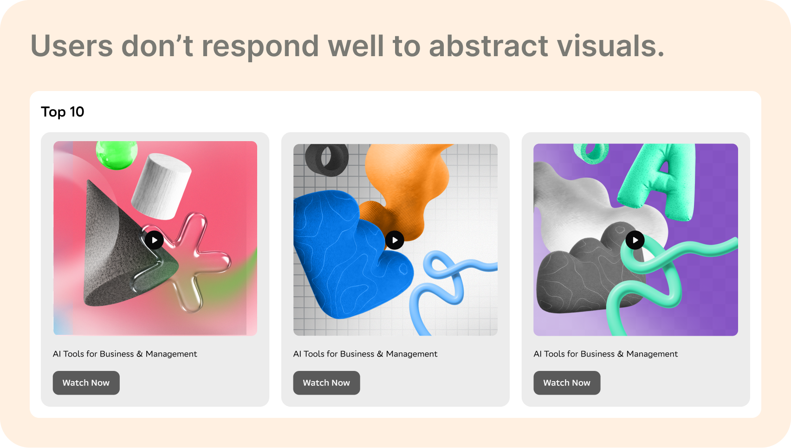
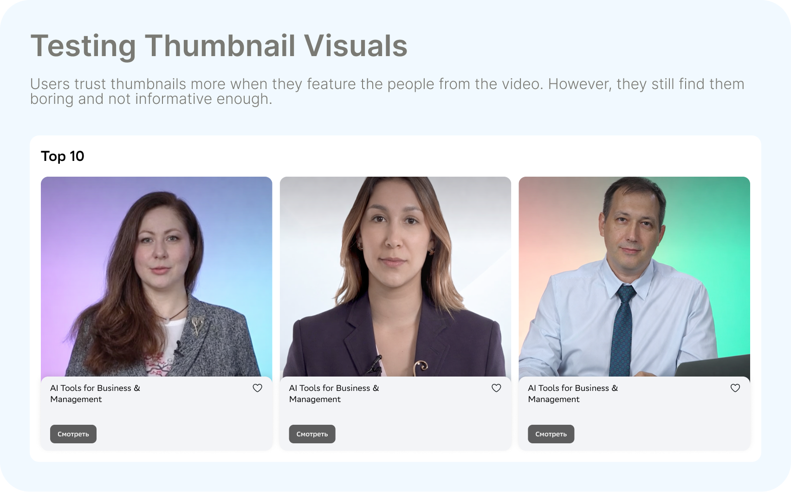
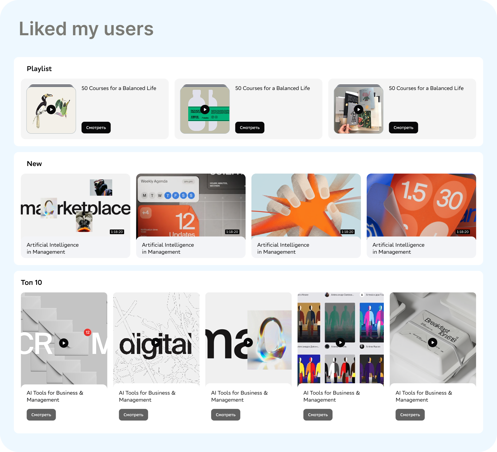
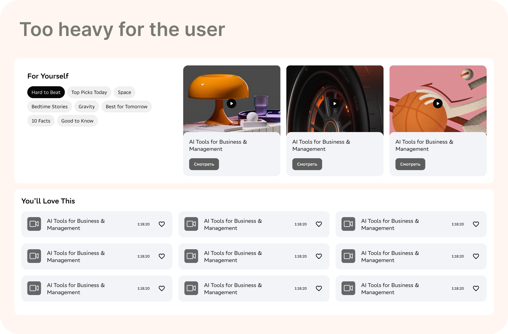
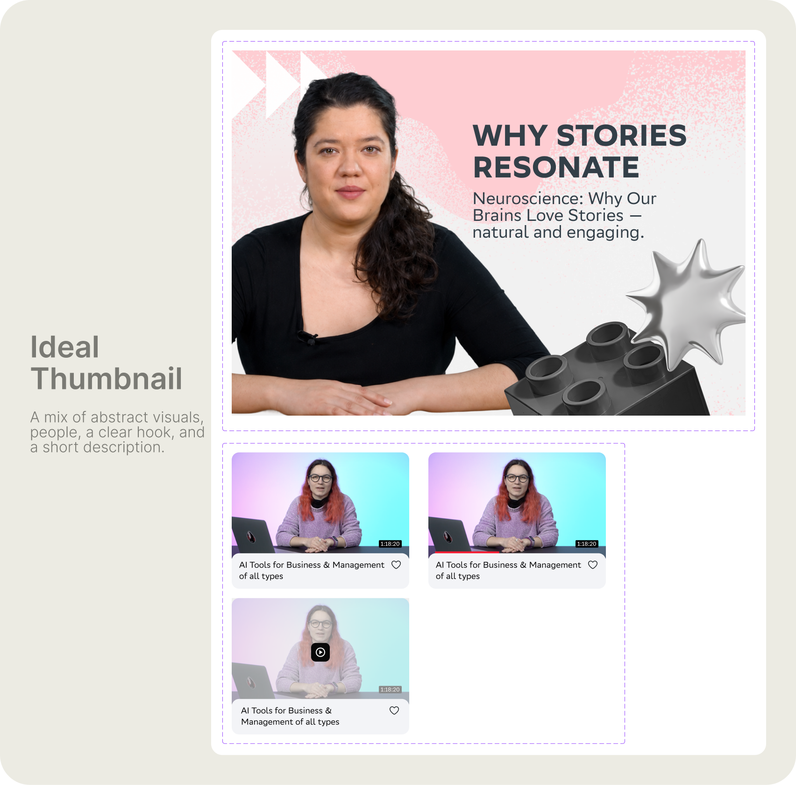

Role and overall result
Product Designer — led research, wireframing, usability testing, and design system creation. Coordinated the graphic designers team on base image production.
16,000
videos covered by the new system
52 × 82
base images × colour variations
Live
in production — engagement up, drop-off down
Content feed redesign — Netology subscription platform
Tools and methodologies
Figma — all design, prototyping, and design system documentation. Discovery via competitive analysis across YouTube, Coursera, Udemy, and three further content-heavy platforms. 5-second test on the existing platform. Moderated usability study across four block-type prototypes. A/B thumbnail testing — abstract 3D visuals vs. instructor faces.
| Problem identified | What the evidence showed | Design response |
|---|---|---|
| Visual repetition | Every thumbnail used the same template — same layout, same weight, same feel. The brain stops processing identical stimuli | Introduce variety at both the thumbnail and block level without breaking brand consistency |
| Abstract thumbnails don't build trust | Usability test: users skipped 3D abstract thumbnails — they were visually interesting but gave no signal that a real person was teaching | Add the instructor face to every thumbnail as a non-negotiable element |
| Not enough context to click | A title alone wasn't enough. Users couldn't tell what they'd actually learn — description and hook were absent | Mandate a short description and a strong hook line on every thumbnail |
| Scale constraint | 16,000 videos — manual redesign was impossible. Without a system, any improvement would be a one-off | Build a template system: 4 base images per category × 13 categories × 82 colour variations |
Research synthesis — four problems confirmed before any design work began
- Banner blindness is a perceptual response, not a preference — when everything looks the same, the eye skips it automatically. Variety is functional, not decorative
- 5-second test result: almost no user could name a specific video or category after viewing the homepage. The page was visually forgettable at the page level, not just the thumbnail level
- Competitive review consistent finding: strong platforms maintain variety at the block level and consistency at the brand level — different treatment per content type, all clearly the same product
- Users don't click what they can't picture. The instructor's face was the primary trust signal — it told users a real person was teaching them, not a category icon

The starting point. Every content row — Favourites, Popular, This Month, Learn in 30 Minutes, New — used the same thumbnail template. The same layout, the same visual weight, the same colour system repeated across every video. When there's no variation to stop on, users scroll straight through.
Research — how others solve it
Before designing anything, I mapped how content-heavy platforms keep variety without losing consistency. The pattern that came back from YouTube, Coursera, Udemy, and others: different visual treatment per content type, but a unified brand layer underneath. Each block type earns its own look. Nothing looks accidental.

Competitive analysis — a wide survey of how content-heavy platforms handle thumbnail variety and block-level layout. The consistent finding: platforms with high engagement differentiate by content type at the block level, not just the thumbnail level. Variety is structural, not cosmetic.
Wireframing — designing the block types
With the competitive insight as a foundation, I designed five block types to test how content should be grouped and displayed: Playlist, New, You'll Love This, Top 10, and For Yourself. Each block type has a different visual hierarchy and interaction model.

Wireframes — the five block types at low fidelity. Playlist: three curated collections side by side. New: standard grid of recent content. You'll Love This: compact list with metadata. Top 10: wide grid with play-order hierarchy. For Yourself: tag-filtered browsing with a content panel on the right.

User test 1 — the first high-fidelity prototype with abstract 3D visuals on the thumbnails. Bold, modern, visually varied. The content blocks were distinct and the page had rhythm. Users engaged with the layout — but the thumbnails themselves became the problem.
What users actually needed from a thumbnail
The block structure tested well. The thumbnails didn't. I ran a direct comparison: abstract 3D visuals vs. real instructor faces. The finding was clear — and it changed the design direction more than any visual decision I made.

The thumbnail test — two conditions side by side. Top row: abstract 3D visuals with bold graphic treatment. Bottom row: the same videos with the instructor visible. Users were asked to pick what they'd be more likely to click, and why.

Abstract visuals — rejected. Users found them visually interesting but untrustworthy. Without a face, there was nothing to project onto. No signal that a real person with real knowledge was behind the video. Interesting to look at; not compelling enough to click.

Instructor faces — trusted, but not enough. Users responded immediately to seeing the person who'd be teaching them. Trust went up. But the titles alone still weren't enough: users wanted a short description and a reason to click, not just a name and a face. The face got them to stop — the hook needed to make them stay.
Block type findings
In parallel with the thumbnail tests, the moderated usability study produced clear verdicts on which block types worked and which didn't.

What worked. Playlist, New, and Top 10 all performed well. Users understood the logic of each block immediately — playlists for structured learning, New for fresh content, Top 10 for social proof. The visual hierarchy in each block helped users make decisions quickly without scanning everything.

What didn't. For Yourself was too heavy — too many filter tags, too many decisions before getting to any content. You'll Love This as a compact list was useful but low-engagement; without a thumbnail, there was no reason to stop scrolling. Both were either dropped or simplified.
What we shipped based on the findings
Three block types made it: Playlist, New, and Top 10. For Yourself was redesigned to remove the sidebar filter panel — a simpler entry to personalised content. The multiple-choice block was dropped entirely. Every remaining block was updated with the thumbnail findings: instructor face forward, title, short description, and hook line. The full page was assembled in a deliberate sequence — block types alternating to give the eye variety without chaos.
The design system — solving for 16,000 videos
With the content and face requirements clear, I had to solve the scale problem. Redesigning thumbnails manually one by one was not an option. I worked with the graphic designers team to build a system: 4 base images per category, across 13 categories. Then I built the colour layer — 82 variations. Same base, different background, still on-brand, always distinct.

The 16,000-video thumbnail system. Left: the 52 base images — 4 graphic illustrations per category, built to the platform's visual communication guidelines. Right: the colour palette of 82 variations. Any base image paired with any background colour produces a unique, on-brand thumbnail. The system generates variety automatically — no per-video design decisions required.

The ideal thumbnail formula. Four non-negotiable elements: the instructor facing forward (trust), a bold hook in large type (reason to click), a one-line description below the title (context), and the category graphic as a supporting visual element (brand and variety). The bottom row shows how it looks in the actual grid — consistent at scale, distinct from row to row.
What changed and why
Before: 16,000 videos, one template, no variation, no face, no hook. After: a system that any graphic designer on the team can apply independently — pick the category base, pick the colour variation, drop in the instructor and the hook. The design work is in the system, not in each individual thumbnail. That's what makes it scale. The face requirement came directly from the usability study — abstract visuals that test well in isolation fail when users ask themselves "who is this from?" A face answers that question before the title does.
Results
The redesign has been live in production for one month. Engagement is up, drop-off is down, and subscription conversion is moving in the right direction. Full analytics are still being collected — the numbers will sharpen over the coming weeks.
Final outcome
The platform live — the full content feed with the new block structure, thumbnail system, and layout in production.
Live platform walkthrough — the full Knowledge Base feed with the new block types, thumbnail system, and layout in production.
What I took away
The creative problem — making thumbnails more engaging — was the easy part. The hard part was solving it for 16,000 videos without creating 16,000 individual design decisions.
← Portfolio